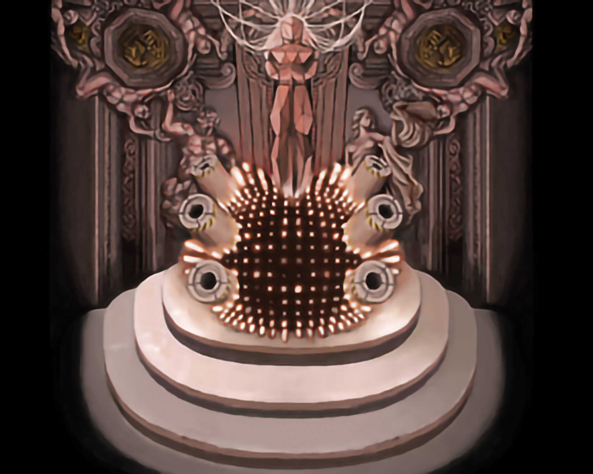

Issues in Design Thinking and the User Experience of Art
2026
A version of this paper was presented at SECAC 2025: Fluxus for the panel: Artists and the Museum in the 21st Century.

This paper explores how design thinking has been utilized to create the illusion of user-centered experiences while benefiting unknown stakeholders. Although this paper focuses on how art spaces have implemented design thinking to control the user experience of visitors (and thus continue to hold and grow their cultural power), the core issues that I address can be seen and felt across all sectors of corporations, governments, institutions, etc. that engage in the development of products, services, and experiences.
This research was supported through department and donor-funded grants, including the Margaret N. Gottwald Scholarship, to conduct research in New York City, New York; Chicago, Illinois; Pittsburgh, Pennsylvania; Linz, Austria; and Berlin, Germany.
Mediating the World (and Ourselves) on Fire: for the Benefit of Platform Capitalism
2024
Aaron Bushnell’s self-immolation outside the Israeli Embassy in Washington, D.C., 2024., https://www.newyorker.com/news/our-columnists/aaron-bushnells-act-of-political-despair
This paper aims to critique how fire functions as an aestheticized representation of destruction within contemporary media culture, ultimately serving the visual and economic demands of platform capitalism. Across social media, news outlets, and cultural production, fire is deployed as a symbol of crisis—whether through climate disaster footage, protest coverage, or acts of self-immolation. Rather than invoking transformation or rupture, these images are flattened into consumable spectacle: circulated for engagement, optimized for algorithms, and stripped of their material stakes.
I examine how fire is used to encode urgency and catastrophe while simultaneously neutralizing them. Media platforms aestheticize destruction through cinematic editing, emotional cues, and visual excess, turning fire into content that feeds endless cycles of monetization and distraction. From viral news clips to livestreamed self-immolations, the image of fire becomes a symbolic interface between viewers and their fire-rendered world. In this way, I argue that fire has become a visual stock asset that supports the profits of platform capitalism.
The Flesh, Metal, & Rot of Fear & Hunger 2: Termina
2024

Logic from Fear & Hunger 2: Termina
This paper examines
Fear & Hunger 2: Termina, a 2022 survival horror RPG, as a work that engages with the aesthetics of machine-age war. Through its fusion of industrial warfare, gothic horror, religion, occultism, and body transformation/mutilation, the game explores issues of transhumanism and dehumanization under machine-age warfare. Set in a liminal reality in the aftermath of a World War II-like event, Termina portrays the human body as disposable assemblages of parts that are subject to willing and unwilling mutation. As such, it highlights how modern warfare transformed the visualization of the human body as newly developed ways to destroy one another were developed: machine guns, tanks, flamethrowers, gas, etc. Environments within the game are filled with organic and inorganic rot to emphasize the lack of sanctity of the body amidst trash in these conditions: bodies, limbs, and sewage with building rubble, scrap metal, rust, weapons, bullet shells. Termina also stages Gnostic pessimism in which divine and technological forces alike erode personhood under militarism. These ideas culminate in the game’s ending of the “Machine God,” a deity born of war, in the pursuit of utopia, that serves a metaphor for how modern states co-opt technological advancement.
Shitposting as Political Praxis & Sincerity in Crisis: Aesthetics & Rhetoric of Trump and Harris' Media Campaigns
2024
Donald J. Trump (@realDonaldTrump), X, November 28, 2024, 6:43PM. https://x.com/realDonaldTrump/status/1862281187600793830.
This paper examines the aesthetics and rhetorical strategies of shitposting in contemporary online political media. It argues that while sincerity attempts to engage earnestly with political discourse, shitposting has become a dominant tactic of the conservative and alt-right movements with their use of irony, rage-bait, and memetics to destabilize mainstream narratives and fuel reactionary politics. Through an analysis of Donald Trump and the broader memeification of politics, this paper demonstrates how the asethetics and rhetoric of shitposting operates as an effective form of ideological warfare. In contrast, the Democratic Party's reliance on sincerity often fails to resonate within a media environment that is built to promote spectacle and engagement; the key ingredients for reactionary politics.